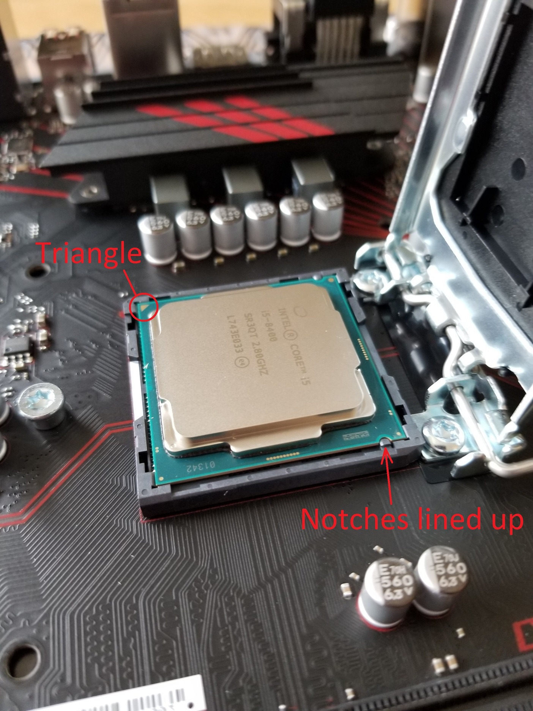
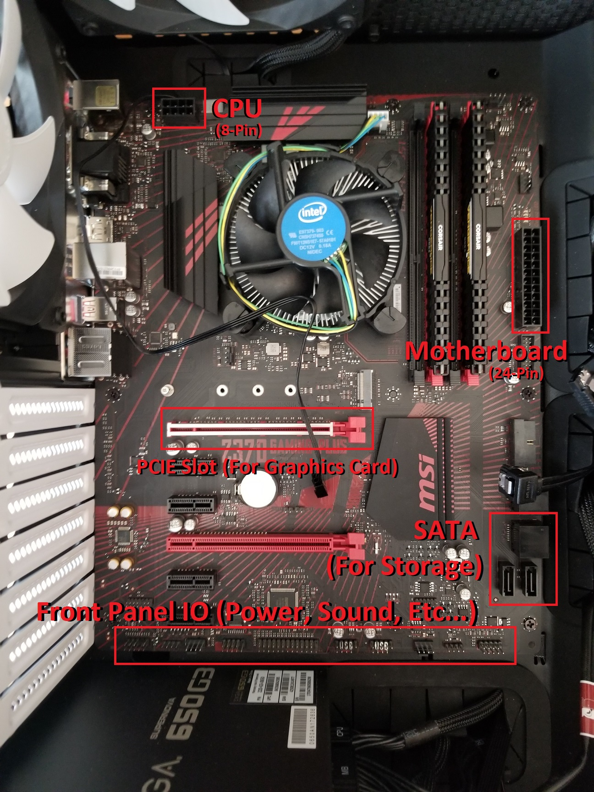
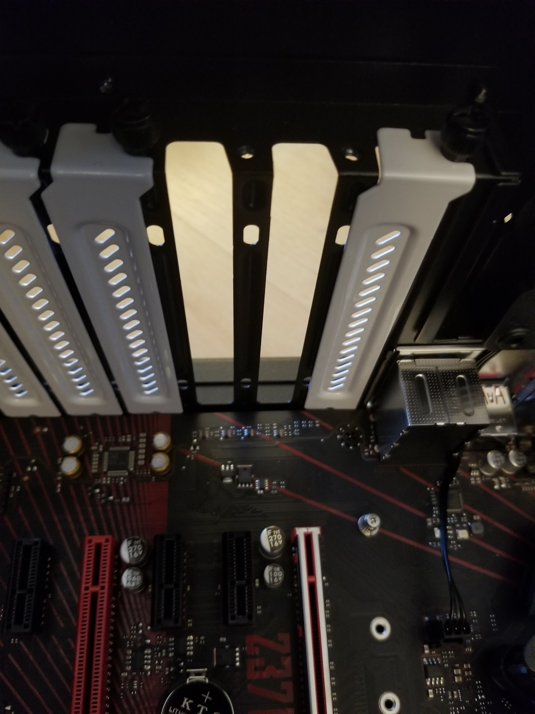
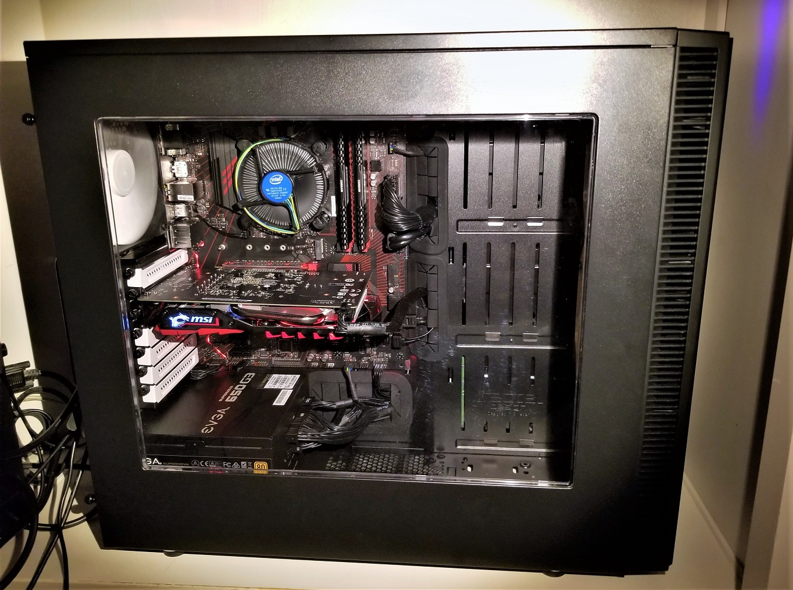

In this photo, the arrow pointing up indicates the direction of airflow. Photo source:
francisw19, author at www.overclock.net
In this photo, the arrow pointing up indicates the direction of airflow. Photo source:
francisw19, author at www.overclock.net So you think you want to build a PC?
Here is a guide to help you through your PC build. This page is just one of the many that touch on the topic of PC building. It was not the author's intent to create the best PC building webpage, but rather a simple "all in one" webpage. Along this webpage, there will be several links to computer hardware definitions that you may visit, if you are unsure about a term or component. Most of the photos on this page are from my own PC build. So buckle up and perhaps you'll soon be getting that sweet 4k 60fps in all the triple A titles. Note: This guide is merely a recommendation; some steps/tips featured on this site may not be necessary for the completion of your PC build. Please use you best judgement and always check twice before jamming one thing into another.
The very first step after gathering all your parts is to prepare your PC’s case. Ensure your working area is clean and free of any clutter, as small parts such as screws may be lost if dropped or misplaced during this process. Once you have you PC case in the working area of your choice, begin by removing the side panels. There usually are thumbscrews that can be unscrewed. Afterwards, the whole panel can be slid backwards and away.
Case fans are important for ventilation. Without adequate airflow inside your case, your PC may overheat. When installing your fans, it is important to note which way the fans spin. There willbe arrows molded into the plastic on the side of the fan, indicating direction of airflow. (See example below.)
In this photo, the arrow pointing up indicates the direction of airflow. Photo source:
francisw19, author at www.overclock.net
As a general rule of thumb, air should flow from the front of the case to the back. (Hot air should be blown out the back,) and from bottom to top. (Since heat rises.) After you install each case fan, make sure you plug the fan's cable into one of the fan headers. (3-pin or 4-pin)
 Above: Two Noctua
AF-14 140mm case fans installed in the front of the case to act as intake fans.
Above: Two Noctua
AF-14 140mm case fans installed in the front of the case to act as intake fans.
Above: A Typical PSU installed in a PC, circled in red.
Installing the PSU is simple. You can simply slide the unit into the case, making sure the exhaust fan is not obstructed. (There should be a ventilation hole) Be sure to secure the PSU to the back of the case with the screws provided. All the cables can be tucked into the case.
Preparing the motherboard will be the most delicate part of the whole PC building process. Although it may seem daunting, if you make sure you know what you're doing and treat the components with utmost care, things will go smoothly.
 Above: A bare motherboard
with nothing installed. It is a good idea to rest the motherboard ontop of the box it came in.
(or any other clean, flat surface of your choice)
Above: A bare motherboard
with nothing installed. It is a good idea to rest the motherboard ontop of the box it came in.
(or any other clean, flat surface of your choice)
The CPU and RAM will need to be installed to the motherboard before the motherboard is installed to the case. To install the CPU, begin by unlatching the metal arm that is connected to the metal cover that sits on top of the CPU socket. After you have exposed the pins inside the socket, you may install the CPU by lining the the small triangular symbol on the CPU with the socket. Afterwards, gently place it in the socket, dropping it straight down from a height of 2-3mm. (Do not slide or press the CPU into the socket. Gravity will work just fine.) After confirming the CPU is sitting correctly in the socket, latch the metal arm and its metal cover back into place. The black plastic cover should pop off, exposing the metal top of the CPU. Afterwards, you can install your CPU cooler. Stock Intel/AMD coolers (that come with the CPU in the box) will already have thermal paste. Be sure make sure the cooler has latched onto the motherboard firmly before proceeding with installation of the RAM.

When installing the RAM, make sure to install the sticks in pairs. Usually, the RAM slots on the motherboard will be colour coded for this. In my case, two of the slots are black and the other two are red. Although it depends on the motherboard, (check the manual) in my case, I need to install my RAM in the two red slots first. Before you install the sticks, make sure to pull back the tabs at either end of the slots. Afterwards, take the stick and push it into the slot, going in at a slight angle so that one end will go in first, before the other. It will take a bit of force but you should hear a click, indicating that the tab has locked into place with the stick of RAM. You can then push the other end of the stick into place, making sure the tab you pulled down locks. Repeat these steps for the other stick(s) of RAM.
Now that you have installed both the CPU and the RAM, we can install the motherboard to the case. Start by attaching the IO shield to the case. The IO shield will come with your motherboard; it's a metal sheet that has holes and labels for the ports at the back of the motherboard. When you are snapping it into place from the inside of the case, make sure you don't cut yourself or bend the small metal tabs protruding from the shield. Now you can install the motherboard standoffs. These are small metal cylinders that are screwed into the case, lifting the motherboard up by a few millimeters from the side of the case. This is so that the motherboard doesn't short out on any pieces of metal it shouldn't be touching.

After all the standoffs have been installed to the case, the motherboard can be screwed onto the standoffs. Afterwards, you can connect the power cables to the motherboard, which includes the 24-pin motherboard cable and the 8-pin CPU cable. Other cables such as the front panel I/O cables can also be connected. Make sure you don't forget to wire the power button so that you can turn on your PC when you are finished.
Note: your motherboard may have more or less ports/slots. Consult the manual that came with your motherboard to find out specific details and locations of the ports/slots.
The two most main types of PC storage options are hard disk drives (HDDs) and solid state drives (SSDs). Another name for a hard disk drive is hard drive, or hard disk. In terms of installation, the steps are almost identical for both HDDs and SSDs. Desktop HDDs are usually 3.5 inches wide whereas SDDs in general are 2.5 inches wide. The screw size and placement of the screw holes will be slightly different, but they both use four screws in total for mounting.
I chose to have both an SSD and a HDD in my PC build. Note how the cables are properly organized inside the case. (Cable management should be practiced if you want to do that extra step to make things a bit nicer)
The HDD/SDD can be screwed to the case with four screws; then you can plug in the SATA power cables. (The ones that are connected to the PSU.) The final step is to use a SATA data cable to connect the HDD/SDD to the motherboard's SATA ports.
The GPU usually is installed in the form of a graphics card. This component is connected to the motherboard through a PCIE slot. Most motherboards/ CPUs come with integrated graphics, but if you want to be playing newer games at high frame rates, you will need a graphics card. To install a graphics card, begin by taking off the PCIe slot covers/shields located at the back of the case.
 Above: Two shields have been removed for the graphics card that I will be installing. Some graphics cards may only need to have one shield removed.
The PCIe slot has a single tab at the end, similar to the tabs on a RAM slot. This tab need to be pulled back before the graphics card is inserted. When you insert the graphics card, make sure the tab clicks back into place, locking the graphics card to the slot. The thumbscrews from the PCIe shields will also need to be screwed back, adding another layer of security for the graphics card. (See photo below.)
Some graphics cards will need a 6-pin power cable to function. (This includes the one that I chose for my build.) Most PSUs have this cable, which can be plugged in like you would with the 8-pin CPU power cable.
After you have installed all the PC components and have connected all the necessary power and data cables, you can turn your PC on for the very first time. You will need to go to something called the BIOS. Upon pressing the power button, you need to repeatedly press a key to access the BIOS. consult your motherboard's manual for which key to press. If you didn't make it to the BIOS the first try, you can safely shut down the PC by holding the power button. Once you are in the BIOS, you can check to see if your motherboard recognizes all the components that have been installed. This includes the RAM, storage (HDDs and SSDs) and the graphics card. If a component is not showing up, check your cables and try again. If everyhting does show up, you can reboot and install Windows or any other OS (Operating System) of your choice. Once windows has been installed on your PC, make sure to download and install all the latest drivers, especially for your graphics card.
Once these final steps are completed, reboot your PC. Congratulations! You can now start using your brand new PC. Make sure you have an Antivirus program (I highly suggest Malwarebytes) installed and you everything should be good.
Thanks for reading!
Return to the top of the page.
© Trevor Li 2018, all rights reserved. All images by Trevor Li unless noted. Background image by the Lubuntu Artwork Team